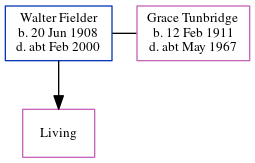

Walter Fielder 1908 - c2000
[ Home ] | [ Calendar ] | [ Surnames Index ] | [ Census Index ] | [ Family History ]A sports purchase caretaker steward head ?, Walter Fielder, the husband of Grace Clara Tunbridge (the second cousin once-removed on the father's side of Nigel Horne), was born on Jun 20, 19081,2 and. He married Grace (with whom he had 1 surviving child, Joyce E) at St Luke's Church, Eltham, London, England on Jun 27, 19363 (Apr/May/Jun). On Sep 29, 1939, he was living at 177 Footscray Road in Eltham1.
He died c. Feb 2000 in Maidstone, Kent, England2.
Citations
- 1939 Register - Findmypast (was the head of the household)
- England & Wales deaths 1837-2007 - Findmypast
- England & Wales, Marriage Index: 1916-2005 Online publication - Provo, UT, USA: The Generations Network, Inc., 2009.Original data - General Register Office. England and Wales Civil Registration Indexes. London, England: General Register Office. © Crown copyright. Published by permission of the Cont
Media
Kent & Sussex Courier - 3 Jul 1936

England & Wales marriages 1837-2005 - BMD/M/1936/2/AZ/000464/032
England & Wales deaths 1837-2007 - BMD/D/2000/1/83657434
1939 Register - TNA-R39-0657-0657K-005-31
Family Tree
Generated by ged2site. Last updated on Jun 11, 2024